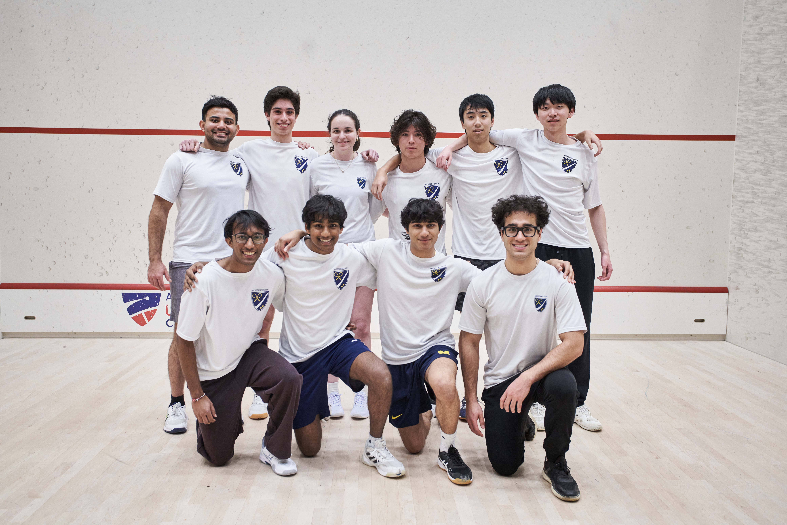
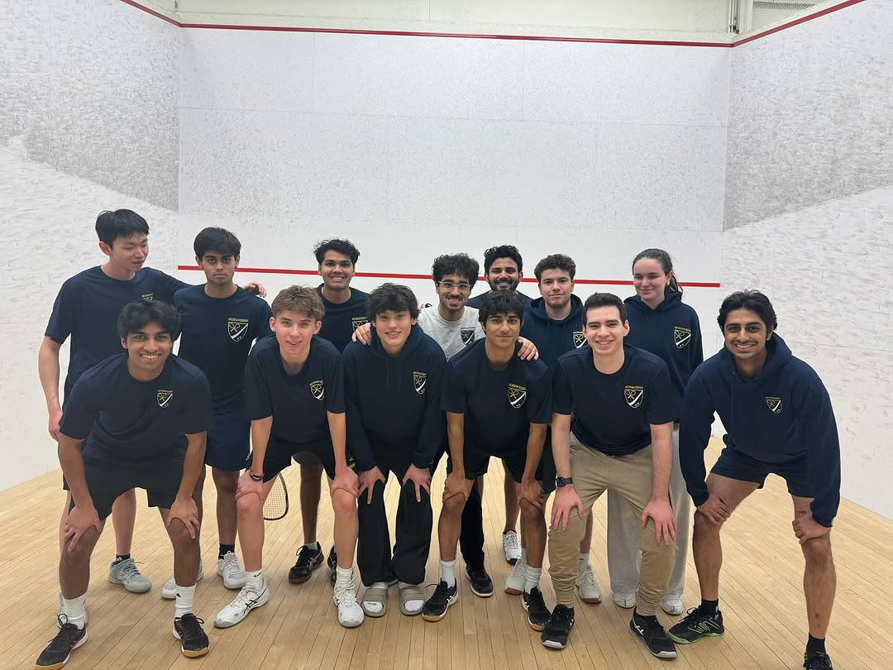
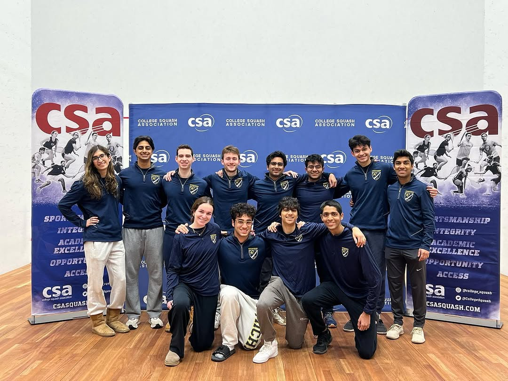
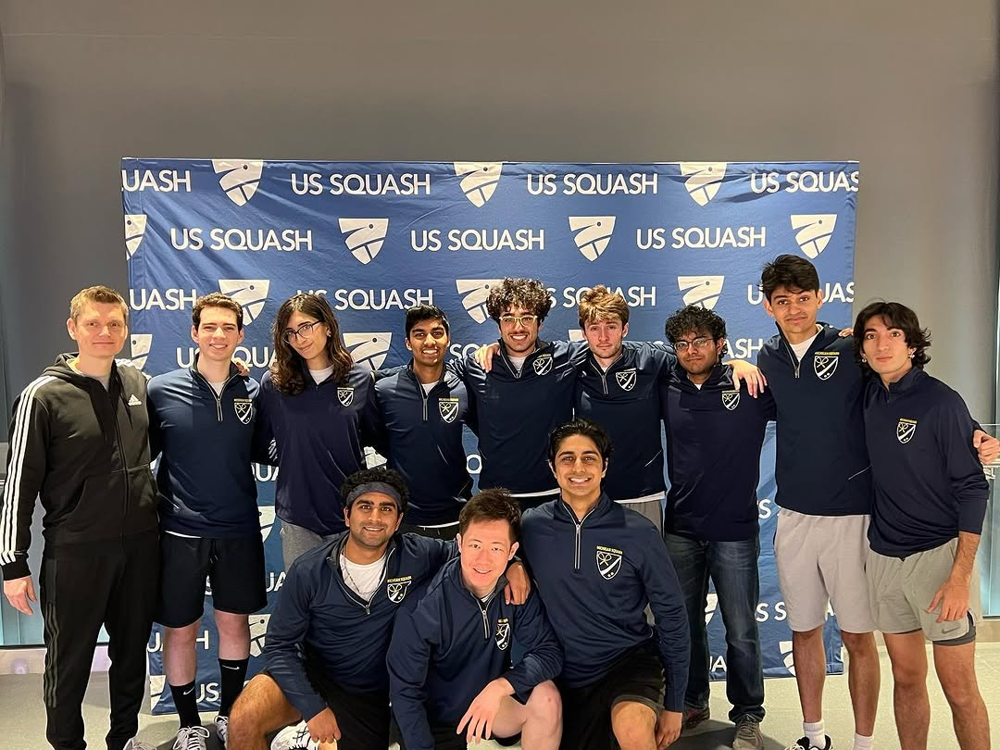
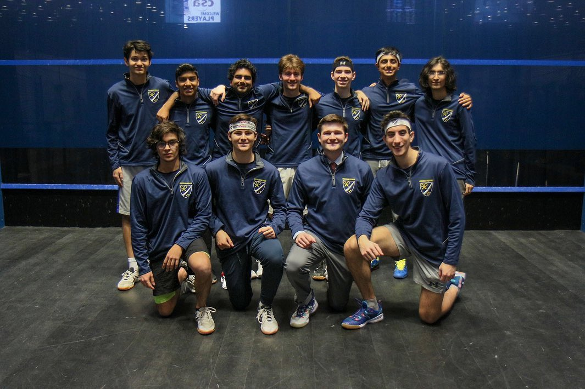
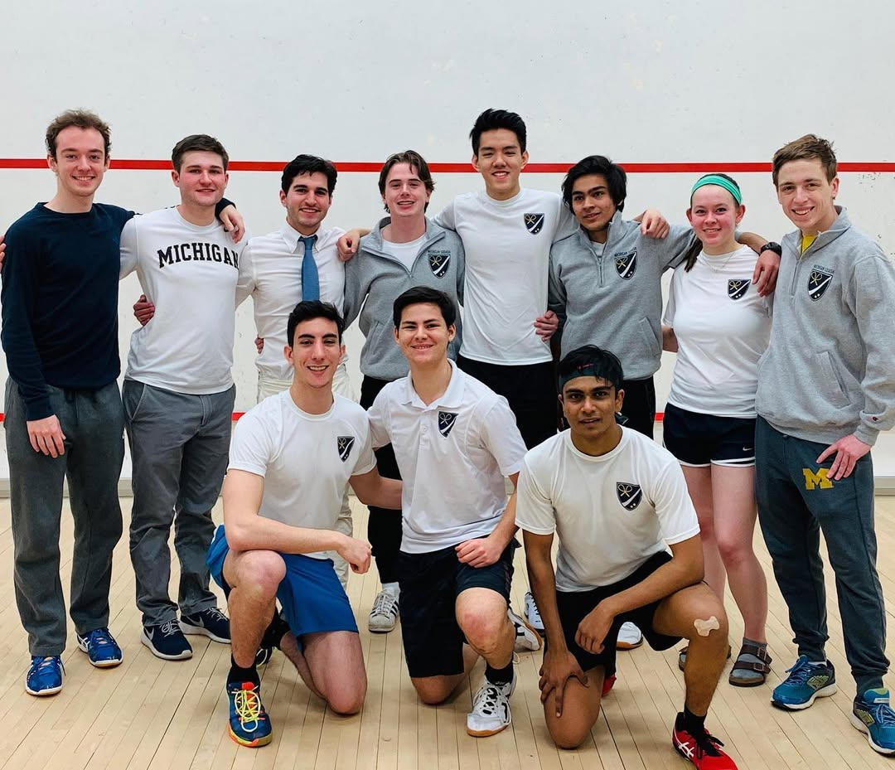
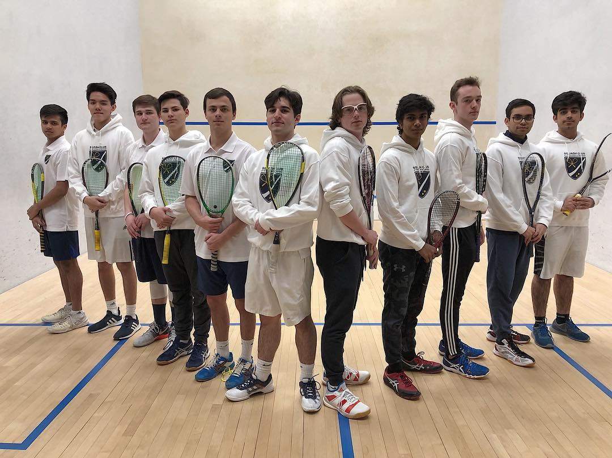

Seven seasons of growth, competition, and Michigan pride on the squash court.
Founded in 2018
Michigan Club Squash was founded by a group of passionate players at the University of Michigan. What started as a small group has grown into a competitive program competing nationally in the College Squash Association.
2025–2026
7–4
Competed at CSA Club Nationals in Philadelphia
Swept Notre Dame twice in back-to-back matches
Claimed #23 Club National Ranking
7
Wins
4
Losses
#23
CSA Rank
25–26


24–25
2024–2025
4–7
Competed at CSA Club Nationals in Philadelphia
Competed at MetroSquash Round Robin in Chicago
Beat Carnegie Mellon and Kenyon College
4
Wins
7
Losses
2023–2024
10–5
Competed at CSA Club Nationals in Philadelphia — beat Northeastern
Swept Indiana twice at Birmingham Athletic Club
Dominant wins over Ohio State, Notre Dame, and Kenyon
10
Wins
5
Losses
23–24


22–23
2022–2023
8–5
Competed at CSA Club Nationals in Philadelphia
Beat Northwestern and Washington University at Nationals
Wins over Ohio State, Notre Dame, Carnegie Mellon, and Indiana
8
Wins
5
Losses
2021–2022
10–0
Perfect 10–0 regular season record
First win against a Varsity program — defeated Denison University
Beat Ohio State twice
10
Wins
0
Losses
21–22

20–21
2020–2021
COVID-19 Season
Season significantly impacted by the COVID-19 pandemic.
2019–2020
Season concluded early due to COVID-19 pandemic.
Wins
Losses
19–20


18–19
2018–2019
Founding Season
Michigan Club Squash founded by student players at the University of Michigan.